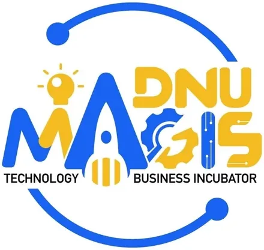

MAGIS Technology Business Incubator (TBI)
Ateneo de Naga University (ADNU) · Region V
The MAGIS Technology Business Incubator (TBI) is the startup incubation center of Ateneo de Naga University (ADNU) in Naga City, Camarines Sur. Supported by DOST-PCIEERD under the HEIRIT (Higher Education Institution Readiness for Innovation & Technopreneurship) Program, MAGIS TBI nurtures technology-based startups and technopreneurs in the Bicol Region. The center operates under Ateneo de Naga's commitment to social entrepreneurship and magis — doing more for the greater good — connecting Bicolano innovators to funding, mentoring, and market development resources.
- Category
- Technology Business Incubator
- Host institution
- Ateneo de Naga University (ADNU)
- City
- Naga City, Camarines Sur
- Region
- Region V
- Operating status
- Operating
Programs & Services
- Startup Incubation — structured incubation programs for technology-based and socially innovative startups in the Bicol Region, with guidance from program managers and DOST network experts
- Business Development Mentoring — coaching and guidance from experienced mentors, industry practitioners, and Ateneo de Naga faculty with entrepreneurship expertise
- Prototyping & Innovation Support — technical assistance for converting ideas into testable prototypes and market-ready products
- DOST-PCIEERD Program Access — facilitated access to DOST funding, HEIRIT Program benefits, and national startup ecosystem support
- Pitching & Showcase Events — regular bootcamps, demo days, and pitch events connecting MAGIS startups with investors, industry, and the broader Bicol startup community
Contact
Sources & references
- magistbi.com
- adnu.edu.ph/magistbi
- newsbytes.ph/2025/05/09/ateneo-de-naga-opens-tech-incubator-for-internet-of…
Details are drawn from public records and the sources above, July 2026.
Startupreneur Innovation Hub · synced from the Notion catalog (July 2026) · status: published.